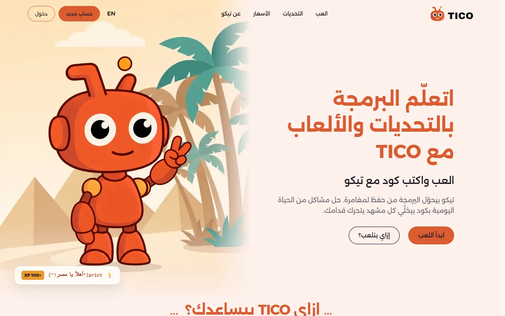
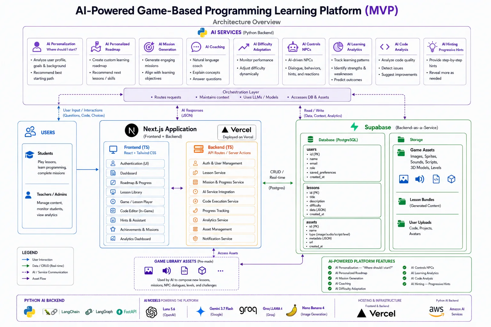
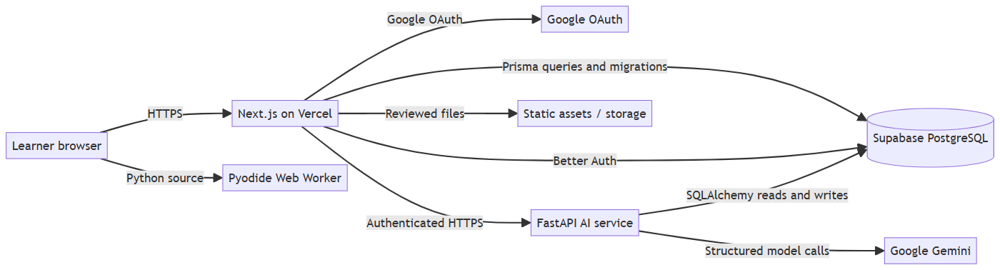
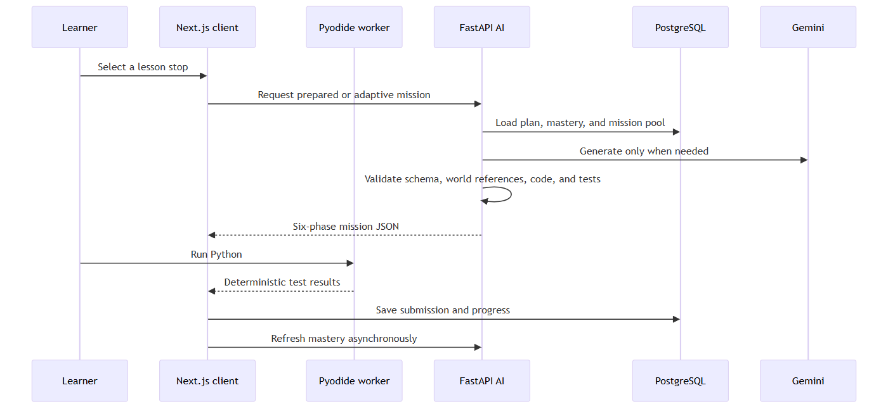
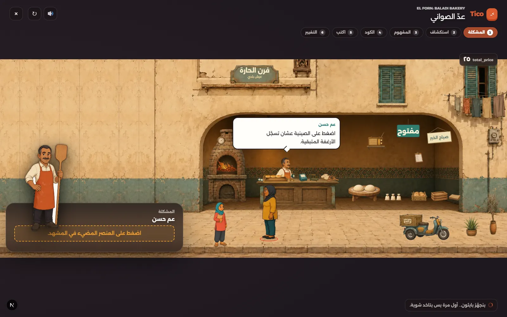
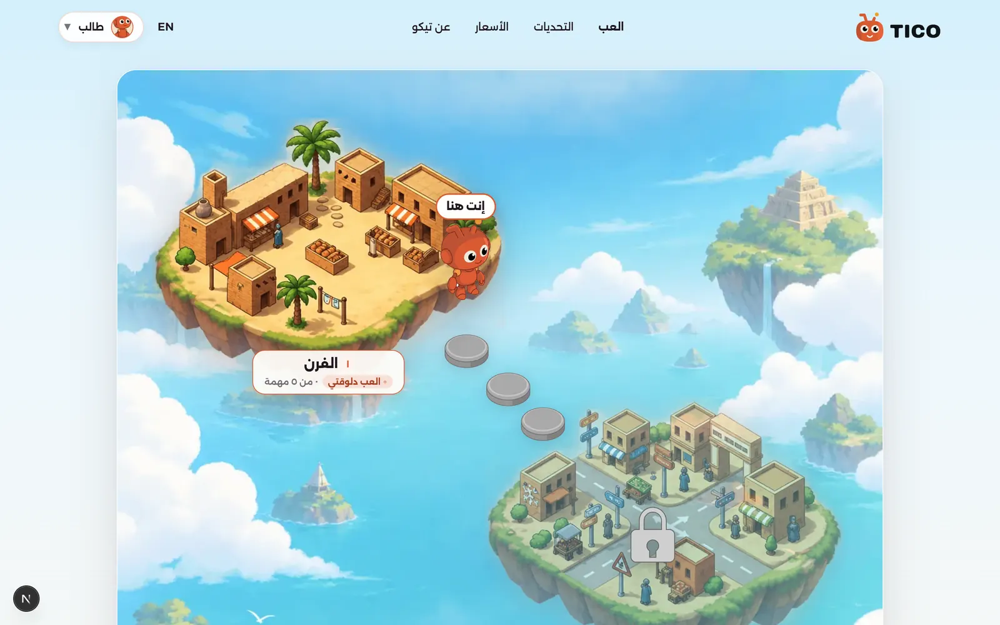
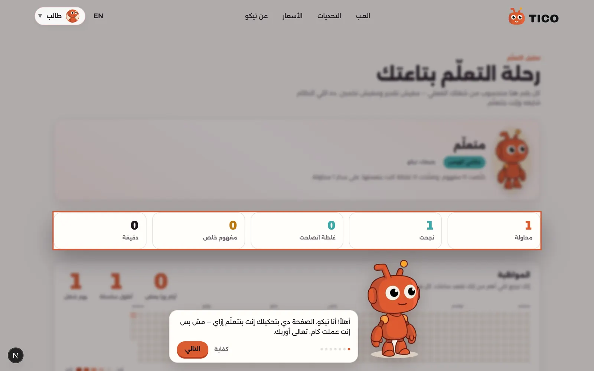

A bilingual, AI-assisted programming platform that turns beginner code into visible consequences in an Egyptian game world.

TICO combines a browser-based game and Python coding environment with a dedicated AI service and a shared PostgreSQL database. Learners solve story missions, run real code, observe the scene change, and receive guided support from the TICO companion.
The core design separates learning assessment from AI language generation: deterministic tests decide execution results, while AI explains concepts, offers progressive hints, and personalizes the path. The guiding rule is the server narrows, the model chooses: code produces a closed set of legal options and the model only picks among them or writes bounded prose.
Prepared from the project README, the repository source, and the architecture, AI, browser-execution, and operations documentation. Test counts and live URLs verified on 15 September 2026.
The document is organized so that each evaluation criterion maps to a contiguous block of sections. Every claim is tied to a file, a command, or a live URL that a reviewer can check.
| Criterion | Sections | Where to verify |
|---|---|---|
| Full Stack — repository structure, backend logic, architecture clarity, frontend structure, target platforms | 01 System architecture · 02 Service boundaries and stack · 03 Request flow · 04 Frontend · 05 Application backend, database and identity · 07 Service contract · 12 Game engine · 14 Quality, testing and repository | README.md, docs/05, docs/07, docs/11, client/src/, client/prisma/ |
| AI/ML — justified approach, prompt and model design that is not a pass-through call | 06 AI service architecture · 08 Model routing and prompt design · 09 Hint ladder, chat and mission prompt · 10 Generation pipeline and guards · 11 Cost, caching and evaluation | ai-backend/AGENTS.md, ai-backend/docs/STATE.md, docs/08, ai-backend/app/ai/, ai-backend/app/rules/ |
| Product context | 13 Gameplay and learning design · 15 Analysis dashboard · 16 Development path and live demos | docs/01, docs/02, live client |
/openapi.json and checked for drift in CI.TICO uses a modular architecture with three clear responsibilities: the Next.js application manages the user experience and application operations; the Python service provides bounded AI capabilities; PostgreSQL stores identity, learning content, and progress.

Figure 1. Product architecture concept reproduced from the README.
The illustration represents the broader product vision. Its provider names, example tables, NPC features, and server execution labels are conceptual, rather than a complete statement of current implementation. The implemented baseline uses Gemini for learning AI and executes learner Python locally in a browser worker.

Figure 2. Implemented service architecture, rendered from the exact Mermaid diagram in the README.
| Layer | Selected technologies | Purpose |
|---|---|---|
| Frontend | Next.js 16 App Router, React 19, TypeScript 5 (strict) | Typed, modular web experience |
| UI & animation | Tailwind CSS 4, CSS Modules, Motion for React | Responsive layouts, RTL/LTR, reduced-motion scene motion |
| Editor & execution | CodeMirror 6, Pyodide in a dedicated Web Worker | Real Python with immediate, sandboxed feedback |
| Application backend | Next.js Server Actions and Route Handlers, Zod validation | Authenticated application operations |
| AI backend | Python 3.11+, FastAPI, Pydantic 2, LangChain, LangGraph, Google Gemini | Validated AI workflows behind an OpenAPI contract |
| Data & identity | PostgreSQL on Supabase, Prisma ORM and migrations, SQLAlchemy 2 (sync, psycopg2), Better Auth | Persistent learner records and sessions |
| Verification | Node test runner, Pytest, Playwright, ESLint, tsc, generated-type drift check | Quality checks per layer and across the boundary |
| Hosting | Vercel (client), Supabase (database/storage), AWS EC2 with Nginx → Gunicorn/Uvicorn under systemd (AI) | Deployment |

Figure 3. Mission request flow, rendered from the exact Mermaid diagram in the README.
POST /v1/missions/by-lesson. By default this serves a reviewed authored mission in about one second; live generation is a deliberate, gated opt-in (section 10).AiServiceError with a retryable flag, and every caller has an authored fallback — hint.service.ts falls back to the mission’s authored hints, and mission endpoints serve reviewed content when generation is off or fails.The frontend is the learner’s main environment: it connects story exploration, Python coding, feedback, and progress in one browser experience. Next.js 16, React 19, and strict TypeScript provide the foundation; Tailwind CSS, CSS Modules, and Motion for React support consistent layouts and animation.
| Target | Commitment |
|---|---|
| Browsers | Chromium, Firefox, and WebKit (Safari). The Pyodide runner is integration-tested in all three engines; no desktop install or plugin is required. |
| Form factors | Desktop and landscape tablet breakpoints for the mission workspace (scene beside editor, output, and hint panels). Marketing and map pages are responsive down to phones. |
| Languages and direction | Egyptian Arabic (ar-EG, default) and English. Interface direction follows the language; Python source and output stay left-to-right in an isolated LTR region. |
| Accessibility | Status never relies on color alone; motion honours prefers-reduced-motion; Ctrl/Cmd+Enter runs code without overriding browser shortcuts; keyboard completion of a mission is a release gate. |
| Route | Responsibility |
|---|---|
/[locale], /about, /pricing | Landing and marketing pages with the page-aware TICO chat |
/[locale]/login, /signup, /onboarding | Google sign-in and first-visit onboarding |
/[locale]/learn, /learn/[chapterSlug] | Chapter and learning maps |
/[locale]/worlds/[worldSlug]/play/[lessonSlug] | Six-phase mission player for a map stop |
/[locale]/progress, /challenges | Learner analysis dashboard and post-roadmap challenge arena |
/api/auth/[...all], /api/v1/** | Better Auth handler; application API and authenticated proxies to the AI service |
Server Components render pages and application reads. Interactive client components are kept small and grouped by concern: components/mission-player (the six-phase experience), components/bakery (layered scene renderer and simulation), components/mission-ui (world and challenge maps), components/analysis (dashboard), and components/motion (reduced-motion-aware primitives). Shared logic lives in lib/ — runner (worker protocol and hook), bakery (scene manifest and mission simulations, unit-tested), ai (generated contract types and the service client), and auth.
┌──────────────────────────────────────────────────────────────────┐ │ world breadcrumb mission title XP locale/profile │ ├──────────────────────┬───────────────────────────────────────────┤ │ illustrated scene │ task, examples, and active hint │ │ + character reaction ├───────────────────────────────────────────┤ │ │ Python editor (CodeMirror, LTR) │ │ ├──────────────────────┬────────────────────┤ │ │ Run / Submit / Hint │ output and tests │ └──────────────────────┴──────────────────────┴────────────────────┘
The editor and output persist while hints or story details open. Run executes visible checks; Submit executes the full formative suite. TICO’s panel is mission-bounded, not a global chatbot.
Pyodide runs in a dedicated worker (public/runner/python-worker.js) so execution never blocks the interface. Each run uses fresh globals, a 5,000 ms wall-clock limit, a 65,536-byte output cap, at most 30 test cases, and an import allowlist (math, random, statistics, string, decimal, fractions). A worker cannot safely interrupt synchronous Python, so on timeout the whole worker is terminated, TIMEOUT is reported, and a fresh worker is created without losing editor content. Results are normalized into a fixed vocabulary that the scene, the hint ladder, and error analysis all consume.
| Protocol element | Meaning |
|---|---|
| Run outcome | OK · SYNTAX_ERROR · RUNTIME_ERROR · TIMEOUT · RUNNER_ERROR — the child is told something different for each. |
| Per-case status | PASSED · WRONG_OUTPUT · RAISED · REJECTED, with the sanitized repr() of the actual value and a one-line error with harness frames stripped. |
| Test cases | Come from the validated mission, never from the learner; the worker still parses each one and refuses anything that is not a plain allowlisted call. |
| Versioned messages | Every worker message carries a protocol version and is parsed, never trusted; stale responses are matched by request ID and dropped. |
The application backend keeps identity, application data, and progression next to the web application. It is layered so that a reviewer can follow one request from validation to persistence without crossing into UI code.
| Layer | Location | Rule |
|---|---|---|
| Server Actions | src/actions/ — auth, onboarding, session, mission, submission, hint, plan, companion | Every mutation authenticates with requireUser() and parses its input with a Zod schema before touching the database. |
| Services | src/services/*.service.ts | Business logic and Prisma access; the only layer that composes transactions and calls the AI service. |
| Data access | src/lib/db.ts | One Prisma client singleton; no new PrismaClient() anywhere else. |
| AI boundary | src/lib/ai/client.ts, src/lib/ai/types.ts (generated) | All AI calls go through one wrapper; contract types are generated from the service’s OpenAPI and never hand-edited. |
| Route Handlers | src/app/api/** | Better Auth callbacks, application API, and authenticated proxies to the AI service including the SSE chat stream. |
submitCodeAction requires a session user, validates sessionId, code, a fixed outcome enum (PASSED | FAILED | ERROR | TIMEOUT), output, and duration, then calls submissionService.processSubmission. The service prefetches read data outside the transaction to keep locks short, then writes the submission and accepted progress inside db.$transaction. Browser-reported results are recorded as formative evidence; a duplicate completion never duplicates progress.
X-Request-ID on every request. The Python service echoes it into logs and error bodies, so a classroom bug report is traceable end to end.{ data, meta }; fetchAi<T> returns the typed data half. Errors are { error: { code, message, request_id, retryable, details } } and become AiServiceError; callers retry only when retryable is true.POST /v1/tico/messages streams SSE and returns the raw Response.Naming across the boundary. The table is exercises; learners and the AI contract say mission, and a Track row is a world. Layers translate at the boundary (missionId: exercise.id) rather than renaming either side.
Supabase-hosted PostgreSQL is TICO’s shared persistent data layer. It connects account identity, curriculum, mission attempts, progress, and the evidence needed for AI-supported adaptation. Both services use the same database while retaining explicit ownership boundaries.
| Data area | Purpose |
|---|---|
| Identity and learner profiles | Users, linked Google accounts, sessions, onboarding preferences, roles. |
| Curriculum and content | Tracks (worlds), lessons, exercises (missions), exercise–concept weights, prebuilt and generated mission records. |
| Submissions and progression | Mission attempts, practice sessions, user progress, concept mastery, per-learner lesson plans. |
| Companion and AI evidence | Companion chats, hint events, hint cache, and the ai_interactions audit log for every model call. |
client/prisma/schema.prisma (32 models, 13 migrations) is the authoritative definition of every table, AI tables included. The Next.js backend uses the shared Prisma client; the Python service maps the same tables with synchronous SQLAlchemy and never creates or migrates them — there is no Alembic. A schema change and its migration ship in the same commit, and ai-backend/tests/test_model_mapping.py compares every SQLAlchemy mapping against the real migration SQL, so a rename cannot drift silently.
Transactions cover related updates that must succeed together, such as saving a submission and updating accepted progress. Session ownership, mission version, and duplicate-request handling protect progression; the AI service’s close endpoint moves mastery once and is idempotent. Persisted evidence powers the learner dashboard and later planning without the learner repeating completed work.
Better Auth provides Google OAuth sign-in and opaque sessions stored in PostgreSQL; the browser receives an HTTP-only cookie and there is no anonymous path. The AI service validates bearer session tokens by looking them up in the shared database — it verifies, never issues — and independently checks that the requested learner data belongs to that session. Student, teacher, and administrator roles are part of the authorization model; role-specific actions require server-side checks.
The AI backend is one FastAPI application with six bounded capabilities and one companion persona. It returns JSON decisions and prose; it never renders game state or executes learner code. Its layout enforces a dependency rule — api → services → rules / queries / ai — so every decision rule is testable with no database and no API key.
| Module | Responsibility |
|---|---|
api/v1/ | Routers only: HTTP in, HTTP out. Never import SQLAlchemy. |
schemas/ | Pydantic v2 DTOs — the public contract, exported as OpenAPI and generated into the client. |
rules/ | Pure Python, zero I/O: mastery, progression, plan, composer, hint_ladder, arena, mission_builder. Never imports LangChain. |
services/ | Use cases that orchestrate rules, queries, and AI chains. |
ai/ | router.py (capability → model), prompts/ (versioned), chains/ and graphs/ (LangChain / LangGraph), guards.py, phase_guards.py, moderation.py, sandbox.py. |
manifests/, content/ | Closed world vocabularies (worlds/*.yaml) and reviewed prebuilt missions. |
queries/, models_tables/ | SQLAlchemy access to the Prisma-owned tables, one module per aggregate. |
| Capability | Deterministic layer (Python) | Model contribution |
|---|---|---|
| Hints and TICO chat | Chooses context, hint rung, safety limits, and cache key | Writes short Socratic guidance for that rung only |
| Error analysis | Normalizes runner evidence and restricts categories | Classifies ambiguous failures |
| Student model | Computes weighted mastery over target and carried concepts | None — optional summary only |
| Path planner | Proposes required/optional lessons with a confidence | Reviews every proposed skip; may only refuse |
| Adaptive composer | Selects scaffold, repetitions, and advance/hold | Reviews conflicting evidence only |
| Mission generation | Narrows curriculum and scene vocabulary, runs and validates code | Composes a structured six-phase draft |
Rules propose, the model reviews. The planner and composer decide things about a learner. A pure rule produces a decision and a confidence; only when evidence conflicts does a model review the profile and confirm or override with a written reason. Every decision records decided_by and reason, so it can be explained. Mastery numbers are the exception: always Python, never a model.
The AI service’s /openapi.json is the executable HTTP authority. Every DTO inherits from one Pydantic base schema whose alias generator declares the wire format as camelCase once, never per field; test_contract.py fails the build if snake_case reaches the public contract. The client’s types.ts is generated from that OpenAPI and a --check mode in CI fails when it is stale — the contract was hand-written once, drifted silently, and surfaced as a 422 on five fields at once; generated types cannot drift.
All routes use the /v1 prefix and validate Better Auth bearer sessions against the shared database. Success bodies are { data, meta }; errors are a stable { error: { code, message, request_id, retryable, details } }. Every request carries X-Request-ID, which is echoed into logs and error bodies; mutations accept Idempotency-Key. TICO chat is the one exception: it streams server-sent events with no envelope.
| Endpoint | Purpose |
|---|---|
GET /v1/health | Process and database readiness |
POST /v1/sessions, PATCH …/phase, POST …/close, POST …/debrief | Mission session lifecycle; mastery moves on close; debrief numbers counted in Python |
POST /v1/hints · POST /v1/submissions/analyze | Next permitted hint rung · classify normalized execution failures |
POST /v1/students/{id}/refresh · …/plan | Recompute mastery and path progress · build the lesson plan |
POST /v1/missions/next · …/by-lesson · GET …/{id} · POST …/generate | Select, resolve, reload, or explicitly generate a validated mission |
POST /v1/challenges/next · POST /v1/tico/messages | Mixed practice from mastered concepts · mission-scoped chat over SSE |
Every model call passes through app/ai/router.py; there are no inline model IDs. The route per capability is configuration, so a model can be swapped without a deploy, and each route carries defaults chosen for the job rather than one global setting.
| Route | Model | Why |
|---|---|---|
| Hints, NPC lines, reactions | gemini-3.5-flash-lite | High volume, short output, latency-sensitive; sits inside the learner’s loop |
| Error classification | gemini-3.5-flash-lite | Small structured output over a fixed category set |
| Escalation review (planner skip, composer conflict) | gemini-3.5-flash | Judgement over a messy learner profile, rare |
| Mission generation | gemini-3.5-flash | Structured composition, validated in Python afterwards |
| TICO chat | gemini-3.5-flash | Conversational, streams |
Stable IDs only — no preview or scheduled-for-retirement models. Temperature defaults to 0.2 for structured and pedagogical routes and 0.7 for chat; streaming is enabled only for chat. Output budgets are per capability (hint 400 tokens, debrief 1,200, a whole mission 8,000). Structured routes use with_structured_output() into Pydantic models, so a malformed reply fails validation rather than reaching a child.
Prompts live in app/ai/prompts/ with an explicit version string — for example tico_hint/v1 and mission_gen/v3-remix-keeps-fixed-numbers. The version is written to ai_interactions.prompt_version on every call, so when output quality moves, the column shows which wording moved it. The hint prompt is told only what changes the wording — the rung, the phase, the learner’s current code, and what went wrong. It is not told the learner’s name, mastery scores, or history: a hint should read as a response to what is on screen, not a report from a file.
The rung is fixed in rules/hint_ladder.py by counting prior hint events, before any model is called. The model is never asked how much to give away, only to write well for the amount it was given. That turns “TICO never hands over the answer” from a prompt instruction into a guarantee checked by tests.
| Rung | Job | May contain |
|---|---|---|
| 1 Orient | Point at the region, no diagnosis | Nothing from the solution |
| 2 Question | Make them think about the concept | Nothing from the solution |
| 3 Name it | Name the concept, show the pattern on a different example | The concept and a foreign example; none of the learner’s target values |
| 4 Walk | Walk to the fix in their own code, in words | The precise change, never a runnable line |
The ladder is phase-aware. Guided coding starts at rung 1; the remix phase starts at rung 2 because the learner has already seen the code work; phases 1–4 have no ladder because there is no blank to be stuck on. After rung 4 the learner is offered a smaller practice problem, not the answer.
TICO chat is a LangGraph workflow: moderate_input → generate_response → leak_guard. Moderation is pure Python and runs before any prompt: it redirects requests for complete solutions, unrelated personal advice, secrets, romance, or off-platform contact, and a safety concern is never silently swallowed — it is surfaced as the highest-priority category with human escalation required. The persona is bounded to the platform and the active mission; it is not a general chatbot.
The model is the star: it invents the scenario, the questions, the code, and the twist, so two learners on the same concept get genuinely different missions. What it may not invent is the world. The system prompt states eight hard rules — one Python function that returns its result; only the vocabulary, sprites, and animations it was given; phases 4, 5, and 6 are the same function evolving; blanks marked ___; solvable by a child who just met the concept; Egyptian Arabic prose with English identifiers; phase 2 has no code; JSON only. The model writes test inputs; Python runs the solution to compute expected outputs, because a model asked for both will occasionally produce an answer that is wrong before the child types a character.
A generated mission is never shown unvalidated. The pipeline treats model output as untrusted content that must earn its way to a learner.
| Fence | What it checks | Why it exists |
|---|---|---|
| Vocabulary | Characters, places, and terms come from the manifest | Wrong here and the prose reads as though nobody looked |
| Visual | Every sprite, state, and animation the scene is asked to draw exists in the client renderer | Wrong here and the screen is dead while the code still looks correct |
| Simulation | Fixed quantities the scene owns (a tray holds eight loaves) are not renumbered in any of the four code surfaces, including the remix solution | Wrong here and everything looks correct — tests pass, validator signs off — while the child watches eight loaves land on a “tray of twelve”. This fence was added after that shipped twice. |
hint_leaks_answer and hint_leaks_blank reject a hint that contains a solution identifier, a target value, or a runnable Python line for the rung it was written at. A cached leak is worse than a live one, so only guard-approved hints are cached.looks_like_tico() rejects a debrief that carries backticks, English narration about the learner, or too little Arabic to be a TICO line, and falls back to authored text.ai/sandbox.py runs generated code with a timeout and compares normalized return values; it is the only place the AI service executes any Python, and it never runs learner code.LIVE_MISSION_GENERATION defaults to off. With it unset no mission endpoint calls Gemini; the service serves reviewed and pre-validated missions or answers 503, and a client cannot lift the gate with a request flag. Hints, chat, error analysis, and the debrief still call the model — short, cached, inside the learner’s loop.Gemini context caching targets large contexts and has minimum-token thresholds; TICO prompts are short, so provider caching would not help. Instead a PostgreSQL hint_cache is the required cost control. Its key combines the mission, locale, ladder scope (phase, rung, guided step), the normalized error tag, and a SHA-256 of the task, the learner’s code excerpt, and the error text — never raw code as a key. A hit skips the model entirely and is logged as CACHED; a miss stores the hint only after the leak guard has approved it.
Each call writes a row to ai_interactions with capability, model, prompt version, token counts, latency, cache status, and the moderation verdict. That one table is the cost dashboard, the bug log, the evaluation source, and the child-safety audit trail. Per-capability timeouts and a bounded retry (max_retries=2) sit on every route, and the request ID from the client is echoed into logs and error bodies.
| Check | What it proves |
|---|---|
tests/test_hint_leak.py | Rung-graded leak tests: rungs 1–2 contain no solution identifier, rung 3 none of the target values, rung 4 no complete runnable line. |
tests/test_guards.py, test_generation.py | Broken solutions, pre-filled starters, unknown sprites, renumbered quantities, and out-of-manifest identifiers are rejected. |
tests/test_mastery.py, test_progression.py, test_plan.py, test_composer.py, test_hint_ladder.py | Every decision rule runs with no database and no API key. |
tests/test_router_and_prompts.py, test_moderation.py | Routing, prompt versions, and moderation categories behave as documented. |
evals/ — composer and error-classification accuracy | Offline evaluation sets run as a CI step (6 cases today; the generation-legality eval is owed and tracked in STATE.md). |
tests/test_contract.py, test_model_mapping.py | The OpenAPI contract and the SQLAlchemy mappings match what the client and the migrations actually say. |
The offline suite blanks GOOGLE_API_KEY in conftest.py so nothing can reach a model by accident; live-model tests are an explicit opt-in (TICO_LIVE_MODEL=1). Learner progression is tuned by evidence, not intuition: three stops per concept, extending to at most six when mastery stays below the single shared threshold (0.75), so no learner is trapped on one idea.
TICO uses a custom browser-based 2D scene renderer and simulation layer built with React, SVG, and reviewed sprites. It does not require a separate Unity or Unreal runtime.

Figure 4. Interactive bakery mission and in-game coding panel.
The bakery is composed in a shared 1600 × 900 coordinate system with independent environment layers, fixtures, actors, props, bread ownership, queue state, delivery state, money, and animation beats. Mission logic maps coding outcomes to visible changes: a variable can open the shop or prepare trays, while an if statement can change who receives bread. The scene manifest (client/src/lib/bakery/scene-manifest.ts) and the AI world manifest (ai-backend/content/worlds/el_forn.yaml) share the same closed vocabulary of sprite IDs, so the renderer and generated content can never disagree about what exists.
CodeMirror provides Python editing and Pyodide executes code in the dedicated worker described in section 04. Execution and testing happen away from the main UI thread; results are normalized before they reach the scene, the hint ladder, or error analysis.
Versioned art prompts produce storybook scenes and isolated sprites. A person reviews cultural fit, anatomy, transparency, crop safety, and small-size readability before optimized WebP files receive stable IDs in both manifests. Sprite sheets are cut by connected components (client/scripts/cut-sprite-sheet.py) rather than grids, and a Playwright playthrough script drives every authored mission through a real browser to check placement, overlap, and interactions.
Sample reviewed sprites. The bread board carries one burnt loaf beside two good ones — it is the asset for the “bread can burn” consequence, not decoration.
Each mission follows six authored learning phases while the setting, cast, and props provide variety. The principle, learned from documented generation failures, is author the beats, generate the dressing: anything the learner must not get wrong is written by a person; the model varies the surface around it.
| Phase | Learning experience |
|---|---|
| 1. Encounter | A character introduces a concrete problem in the scene. |
| 2. Explore | The learner predicts what should happen. No code yet. |
| 3. Discover | TICO introduces the Python concept in plain language. |
| 4. Understand | The learner runs and reads a complete example and watches the world work. |
| 5. Guided coding | The same code with blanks; two or more small coding steps change the world. |
| 6. Remix | The world changes and the working code is now wrong; the learner adapts it. |
The current authored El Forn path contains two variable missions and two conditional missions: رسالة الفتح, عدّ الصواني, ظلي العيلة, and النصيب العادي. Each includes multiple scene interactions and three meaningful gameplay beats. Consequences stay legible and never scold: a wrong quantity leaves a customer unserved, an unattended oven burns a loaf, a slow service loses the sale.
Python runs locally in the sandboxed Pyodide worker. AI output never decides whether code passed: deterministic tests, schemas, manifests, and progression rules make that decision.

Learning map from the README. A concept shows three stops; the path extends to at most six when mastery evidence says so, and the client is told when it grew.
Tests follow the risk boundaries rather than the code layout. The numbers below were produced by running the suites on 15 September 2026.
| Command | Result | Covers |
|---|---|---|
ai-backend> python -m pytest -q | 496 passed, 71 skipped | Rules, guards, prompts, routers, contract, model mapping; live-database and live-model suites skip without credentials |
ai-backend> python -m pytest evals -q | 6 passed | Composer and error-classification evaluation sets |
client> pnpm test | 116 passed | Runner protocol, bakery simulations and missions, hint fallback, services |
python scripts/gen_client_types.py --check | drift check | The generated client/src/lib/ai/types.ts matches the live OpenAPI |
python scripts/check_manifests.py | manifest check | Every world manifest loads and every referenced asset resolves |
client> pnpm typecheck, pnpm lint, tsx scripts/check-bakery-playthrough.ts | static + browser | Strict TypeScript, ESLint, and a Playwright playthrough of every authored mission with the API stubbed |
TICO/ ├── client/ Next.js 16 frontend + TypeScript application backend │ ├── prisma/ Authoritative schema and migrations (32 models) │ ├── public/runner/ Isolated Pyodide worker │ ├── scripts/ Mission import, asset preparation, playthrough checks │ └── src/ │ ├── app/ App Router pages and route handlers ([locale]/…, api/…) │ ├── actions/ Server Actions (Zod-validated, authenticated) │ ├── components/ analysis · bakery · mission-player · mission-ui · motion │ ├── lib/ ai (generated types + client) · auth · bakery · runner · db │ └── services/ Application services over Prisma ├── ai-backend/ Python 3.11 FastAPI AI service │ ├── app/ api/v1 · schemas · rules · services · queries · models_tables │ │ └── ai/ router · prompts · chains · graphs · guards · sandbox · moderation │ ├── content/ worlds/*.yaml manifests · prebuilt/ reviewed missions │ ├── deploy/, nginx/ EC2, systemd, Nginx, Docker │ ├── scripts/ Type generation, manifest checks, pregeneration │ └── tests/, evals/ ├── docs/ Product, curriculum, architecture, contracts, AI, safety, testing ├── AGENTS.md · client/AGENTS.md · ai-backend/AGENTS.md Contribution rules per lane └── pnpm-workspace.yaml
Contribution rules are explicit and enforced by tests: routers never import SQLAlchemy, rules never import LangChain, no model ID appears outside the router, no hand-written contract types, and no schema change without its migration. ai-backend/docs/STATE.md records what is true, what is owed, and what is deliberately unfinished, so a reviewer can distinguish a gap from a mistake.
The learner analysis page brings progress and learning feedback into one place. Its purpose is to help learners understand their current position and connect future practice to evidence from missions. Persistent submission and progress records support this experience, while deterministic mastery and progression services provide the foundation for adaptation.

Figure 5. Analysis dashboard shown in the project README. Teacher-wide reporting and richer longitudinal analysis are future extensions.
The page-aware TICO chat can discuss the dashboard and its recorded metrics, so a learner can ask what a number means without leaving the page. POST /v1/students/{id}/refresh returns one row per concept — completed, total stops, remaining, complete, extended — which is enough for the client to draw the path without knowing anything about mastery internals.
The proposed development path strengthens the demonstrated experience before expanding the platform. These items are planned directions, rather than claims of completed delivery or fixed competition milestones.
| Stage | Planned development | Validation focus |
|---|---|---|
| 1 · Strengthen the pilot | Improve onboarding, beginner explanations, interaction clarity, accessibility, and device compatibility. | First-mission completion, scene consequences, RTL behavior, and runner recovery. |
| 2 · Expand learning content | Extend reviewed missions to loops and additional Egyptian worlds, preserving authored teaching beats and varied scenes. | Concept coverage, solution tests, asset manifests, and bilingual content review. |
| 3 · Refine adaptation | Evaluate personalization and hint quality with pilot evidence; rewrite the generation-legality eval; enrich learner analysis and introduce reviewed teacher reporting. | Mastery consistency, appropriate scaffolding, hint usefulness, and privacy controls. |
| 4 · Prepare wider delivery | Strengthen observability, service capacity, backups, deployment automation, and operational safety gates; decide the under-13 data policy. | Load testing, outage fallbacks, authorization, account lifecycle, and recovery exercises. |
| Demo | Project link |
|---|---|
| Client application | https://tico.0xd22.dev |
| AI service documentation (Swagger) | https://54-75-53-43.sslip.io/docs |
| AI service readiness | https://54-75-53-43.sslip.io/v1/health |
| Executable HTTP contract | https://54-75-53-43.sslip.io/openapi.json |
Links reproduced from the README; live availability depends on deployment status.
Project README; AGENTS.md, client/AGENTS.md, ai-backend/AGENTS.md, ai-backend/docs/STATE.md; docs/05-system-architecture.md; docs/07-browser-python-runner.md; docs/08-ai-generation-and-companion.md; docs/11-testing-and-operations.md; and the source under client/src/ and ai-backend/app/. Figures 1, 4, 5 and the sample sprites are reused from the README; Figures 2 and 3 are rendered directly from the README Mermaid sources.